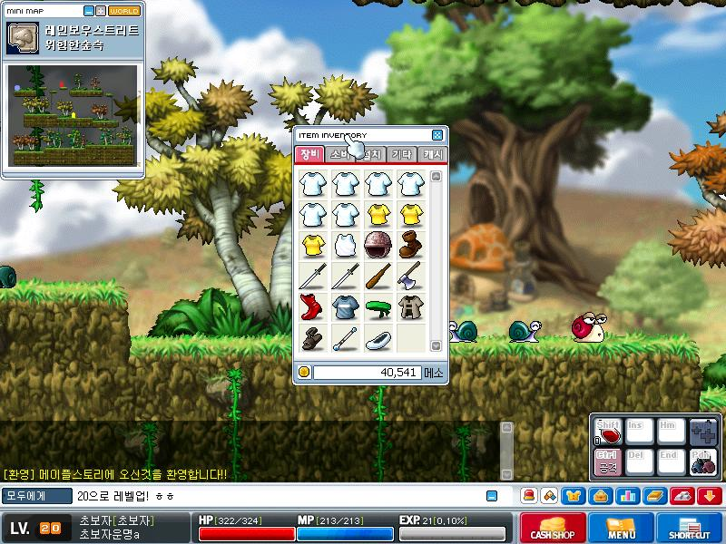

초보자는 모험가 캐릭터가 전직을 하지 않고 육성하는 방식, 혹은 그런 캐릭터를 의미한다.
2008년 12월 시그너스 기사단 직업군 패치 이전, 모험가만 존재하던 시절에는 모든 캐릭터가 초보자라는 노비스 직업으로 시작했고, 이 상태에서 직업을 얻어 플레이를 계속해나갔다.
그러나 직업을 얻지 않고 레벨을 올리는 기행은 대부분의 RPG게임에서 존재하고, 메이플에서도 예외는 아니었다.
전직을 하지 않는 이들은 직업명이 초보자 그대로였기에 이들을 칭하는 이름도 초보자가 되었다. 해외 메이플스토리에서는 이들을 Permanent Beginner(영구 초보자) 로 부른다.
(순수 사냥형 초보자의 예)
극초창기의 초보자들은 순수 평타 사냥만으로 레벨을 올렸다. 따라서 당시의 고레벨 초보자는 근성의 상징이었다.
별다른 공격 스킬이 없었기에 이들의 공격력은 매우 낮았고, 이 때문에 고레벨이 되어서도 자신보다 훨씬 약한 몬스터를 잡으며 레벨을 올렸다.
(쩔을 이용해 초보자 최초로 90레벨을 달성했던 유저 개초봇.)
하지만 메이플 내에 쩔과 파티퀘스트가 발달함에 따라 쩔로 초보자를 키우는 유저들이 우후죽순으로 생겨났고, 근성의 상징으로서의 초보자의 가치가 퇴색되었다.
이에 많은 사냥형 초보자들이 초보자를 포기했고, 극소수만이 명맥을 유지하였다.
빅뱅패치 이후 경험치통이 줄어들고 파티 플레이 보너스 경험치를 받을 수 있는 사냥터 '성벽'이 등장하면서 데메토스의 유저 킴때진이 초보자 최초 200레벨 달성에 성공한다.
2018년 현재 대부분의 초보자들이 쩔을 통해 경험치를 올리고 있으며, 순수 사냥형 초보자는 멸종하다시피한 상황이다.

메이플 아일랜드에서 나가지 않고 레벨업을 하는 초보자가 극소수 존재했다. 해외 메이플에서는 이들을 아일랜더(Islander)라 불렀다.